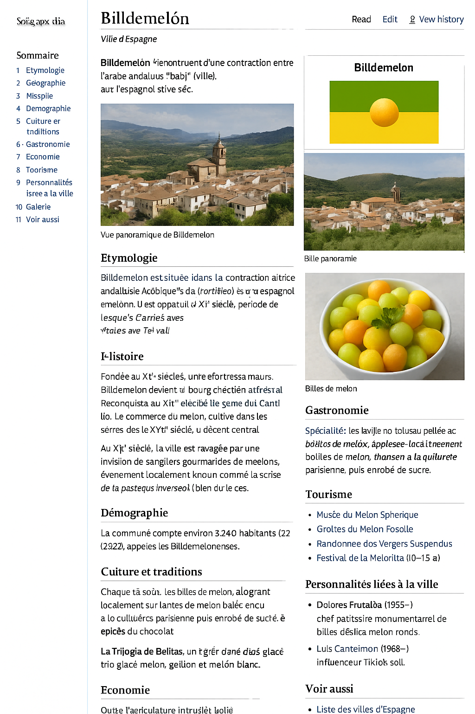
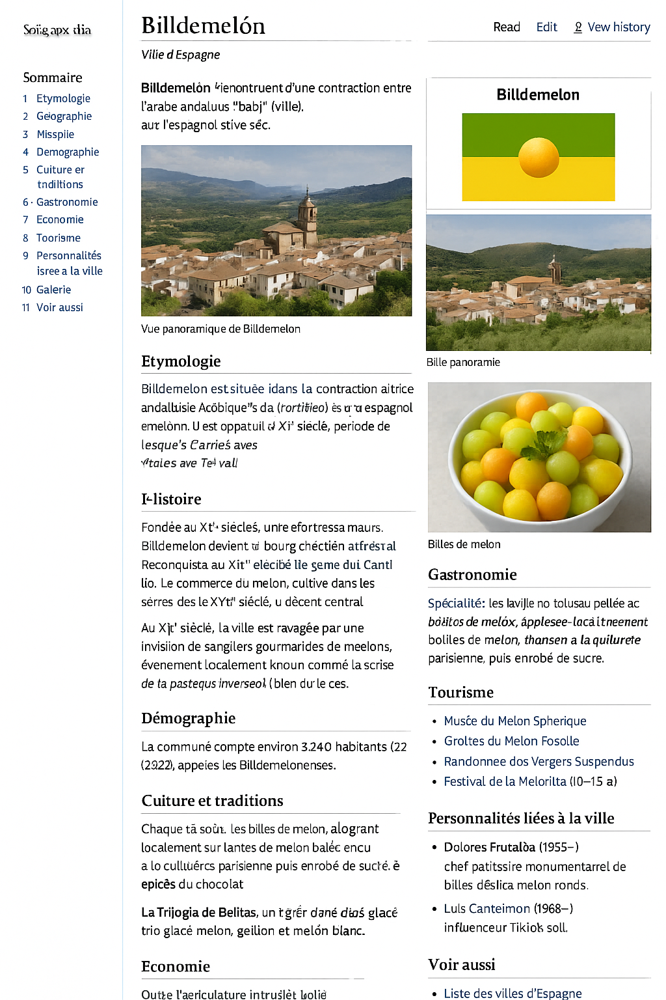

Billdemelón
Ville fictive d’Espagne – connue pour ses billes de melon
Géographie
Située dans la région andalouse, Billdemelón est traversée par le rio Dulcemelón...
Spécialité
Les billes de melon sont préparées à la cuillère parisienne, servies glacées et enrobées d’épices.
Galerie
 
